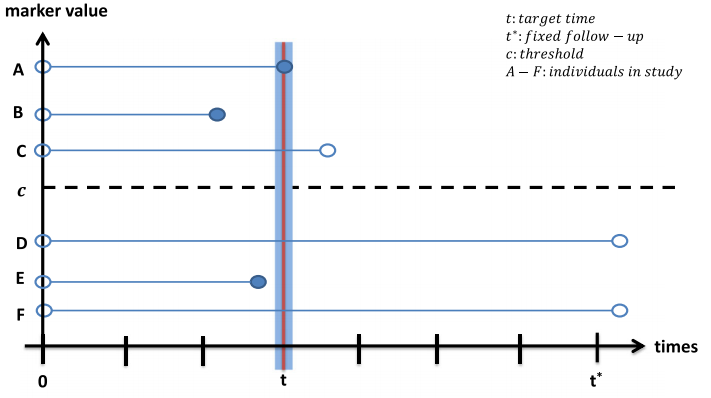
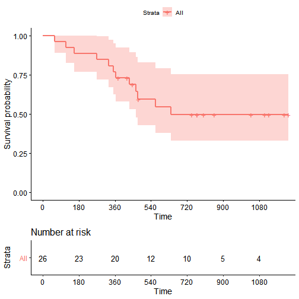
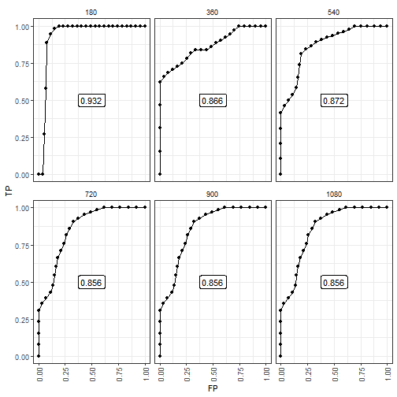
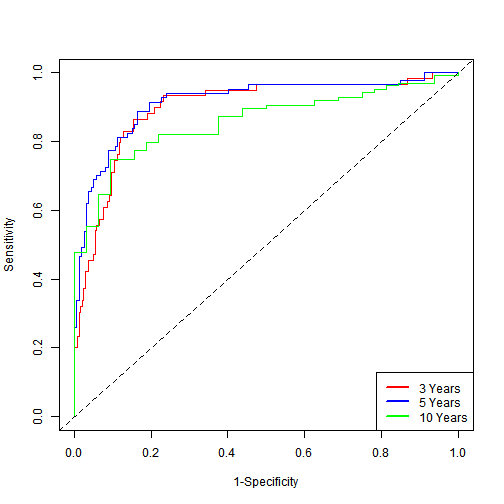
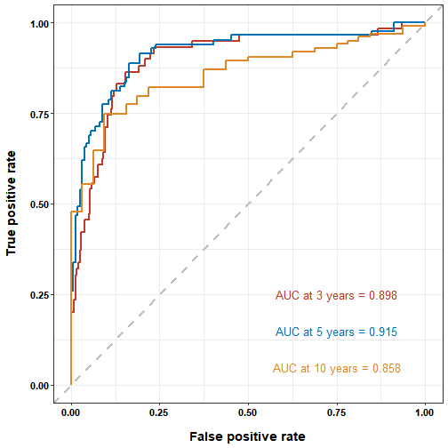

基本概念
在对biomarker进行分析时，我们通常会对预测模型的预测性能通过ROC曲线来进行评估，但是对于一些生存资料相关数据的预测模型需要考虑到生存信息与时间因素进去，于是就有了时间依赖的ROC曲线。
传统的ROC曲线分析方法认为个体的事件（疾病）状态和markers是随着时间的推移而固定的，但在临床流行病学研究中，疾病状态和markers都是随着时间的推移而变化的（即time-to-event outcomes）。早期无病的个体由于研究随访时间较长，可能较晚发病，而且其markers可能在随访期间较基线发生变化。如果使用传统的ROC会忽略疾病状态或markers的时间依赖性，此时用随时间变化的time-dependent ROC（时间相依ROC）比较合适。
原理
时间依赖性ROC曲线有(1) cumulative/dynamic(C/D)、(2) incident/dynamic(I/D)和(3) incident/static(I/S)三种定义，其中cumulative/dynamic(C/D)是比较适合用于生存分析的定义，也是当前大多数研究使用的方法。cumulative/dynamic(C/D)中cumulative是指Cumulative sensitivity，dynamic是指dynamic specificity。
对于任意时间t，每一个个体会按照其在时间t的状态被划分到病例组或对照组。在cumulative/dynamic中，如果一个个体在时间0和时间t之间发病，那么其会被划分到病例组（图中A、B和E）;如果一个个体在时间0和时间t之间没有发病，那么其会被划分到病例组（图中C、D和F）。

在阈值为c的情况下，相应的敏感性和特异性计算公式如下：
$$ \begin{align*} \text{sensitivity}^{\mathbb{C}}(c,t) &= P(M_{i} > c | T_{i} \le t)\ \text{specificity}^{\mathbb{D}}(c,t) &= P(M_{i} \le c | T_{i} > t)\ \end{align*} $$
通过上述公式计算不同阈值下的敏感性和特异性我们即可得到时间t下的ROC曲线。结合上图可以轻易的看出，个体被划分到病例组还是对照组会随着时间t取值的变化而发生变化。假设图中的t增大，那么划分到病例组的个体就会变成A、B、C和E，对照组则会变成D和F。在此情形下，相应的ROC曲线也会发生变化。
意义解析
数据准备
我们使用survival包中提供的ovarian数据集作为例子，可以简单看一下这些样本的生存曲线
library(tidyverse)
## Used for the dataset.
library(survival)
## Used for visualizaiton.
library(survminer)
## Load the Ovarian Cancer Survival Data
data(ovarian)
## Plot
ggsurvplot(survfit(Surv(futime, fustat) ~ 1, data = ovarian),
risk.table = TRUE,
break.time.by = 180)

可以看到再该数据集中，大约在720天之后，就没有患者发生死亡
我们使用所有的协变量(age, resid.ds, rx, ecog.ps)拟合Cox回归模型，并基于线性预测变量构建风险评分。
## Fit a Cox model
coxph1 <- coxph(formula = Surv(futime, fustat) ~ pspline(age, df = 4) +
factor(resid.ds) + factor(rx) + factor(ecog.ps),
data = ovarian)
## Obtain the linear predictor
ovarian$lp <- predict(coxph1, type = "lp")
ovarian
## futime fustat age resid.ds rx ecog.ps lp
## 1 59 1 72.3315 2 1 1 3.48363231
## 2 115 1 74.4932 2 1 1 3.34783240
## 3 156 1 66.4658 2 1 2 2.88061142
## 4 421 0 53.3644 2 2 1 -0.29905598
## 5 431 1 50.3397 2 1 1 0.30051742
## 6 448 0 56.4301 1 1 2 -0.30406562
## 7 464 1 56.9370 2 2 2 0.08752617
## 8 475 1 59.8548 2 2 2 0.12126622
## 9 477 0 64.1753 2 1 1 1.17098395
## 10 563 1 55.1781 1 2 2 -0.66639213
## 11 638 1 56.7562 1 1 2 -0.32969630
## 12 744 0 50.1096 1 2 1 -1.09642040
## 13 769 0 59.6301 2 2 2 0.09654704
## 14 770 0 57.0521 2 2 1 -0.64257241
## 15 803 0 39.2712 1 1 1 -3.22587014
## 16 855 0 43.1233 1 1 2 -1.09198364
## 17 1040 0 38.8932 2 1 2 -1.74841767
## 18 1106 0 44.6000 1 1 1 -1.40907007
## 19 1129 0 53.9068 1 2 1 -1.25981421
## 20 1206 0 44.2055 2 2 1 -1.07935701
## 21 1227 0 59.5890 1 2 2 -0.81842855
## 22 268 1 74.5041 2 1 2 4.06915563
## 23 329 1 43.1370 2 1 1 -0.89939270
## 24 353 1 63.2192 1 2 2 0.11416973
## 25 365 1 64.4247 2 2 1 0.79623290
## 26 377 0 58.3096 1 2 1 -1.59793837
计算时间依赖的ROC
- 使用
survivalROC包进行计算
library(survivalROC)
## Define a helper functio nto evaluate at various t
survivalROC_helper <- function(t) {
survivalROC(Stime = ovarian$futime,
status = ovarian$fustat,
marker = ovarian$lp,
predict.time = t,
method = "NNE",
span = 0.25 * nrow(ovarian)^(-0.20))
}
## Evaluate every 180 days
survivalROC_data <- data_frame(t = 180 * c(1,2,3,4,5,6)) %>%
mutate(survivalROC = map(t, survivalROC_helper),
## Extract scalar AUC
auc = map_dbl(survivalROC, magrittr::extract2, "AUC"),
## Put cut off dependent values in a data_frame
df_survivalROC = map(survivalROC, function(obj) {
as_tibble(obj[c("cut.values","TP","FP")])
})) %>%
dplyr::select(-survivalROC) %>%
unnest(cols = c(df_survivalROC)) %>%
arrange(t, FP, TP)
## Plot
survivalROC_data %>%
ggplot(mapping = aes(x = FP, y = TP)) +
geom_point() +
geom_line() +
geom_label(data = survivalROC_data %>% dplyr::select(t,auc) %>% unique,
mapping = aes(label = sprintf("%.3f", auc)), x = 0.5, y = 0.5) +
facet_wrap( ~ t) +
theme_bw() +
theme(axis.text.x = element_text(angle = 90, vjust = 0.5),
legend.key = element_blank(),
plot.title = element_text(hjust = 0.5),
strip.background = element_blank())

从图中大概可以看出，在180天时ROC曲线的效果最好，但是出现这种情况的主要原因是在180天的时候死亡的患者很少，所以几乎不影响。然后，在时间超过720天后AUC稳定在0.856，说明在此之后一直未死亡的患者贡献了风险得分的预测能力。
案例实现
对于R中time-dependent ROC的实现方式，一般会用timeROC和survivalROC包， 也有一些其他的包如：tdROC, timereg, risksetROC和survAUC可以实现。timeROC相比于survivalROC会多计算个AUC的置信区间
timeROC的具体实现如下：
library(timeROC)
data(mayo)
time_roc_res <- timeROC(
T = mayo$time,
delta = mayo$censor,
marker = mayo$mayoscore5,
cause = 1,
weighting="marginal",
times = c(3 * 365, 5 * 365, 10 * 365),
ROC = TRUE,
iid = TRUE
)
查看计算的AUC值及其置信区间：
time_roc_res$AUC
## t=1095 t=1825 t=3650
## 0.8982790 0.9153621 0.8576153
confint(time_roc_res, level = 0.95)$CI_AUC
## 2.5% 97.5%
## t=1095 85.01 94.64
## t=1825 87.42 95.65
## t=3650 79.38 92.14
绘制time-dependent ROC曲线：
plot(time_roc_res, time=3 * 365, col = "red", title = FALSE)
plot(time_roc_res, time=5 * 365, add=TRUE, col="blue")
plot(time_roc_res, time=10 * 365, add=TRUE, col="green")
legend("bottomright",c("3 Years" ,"5 Years", "10 Years"),
col=c("red", "blue", "green"), lty=1, lwd=2)

使用ggplot2绘制美化版本的ROC曲线：
ROC_data <- data.frame(
TP_3year = time_roc_res$TP[, 1],
FP_3year = time_roc_res$FP[, 1],
TP_5year = time_roc_res$TP[, 2],
FP_5year = time_roc_res$FP[, 2],
TP_10year = time_roc_res$TP[, 3],
FP_10year = time_roc_res$FP[, 3]
)
library(ggplot2)
ggplot(data = ROC_data) +
geom_line(aes(x = FP_3year, y = TP_3year), size = 1, color = "#BC3C29FF") +
geom_line(aes(x = FP_5year, y = TP_5year), size = 1, color = "#0072B5FF") +
geom_line(aes(x = FP_10year, y = TP_10year), size = 1, color = "#E18727FF") +
geom_abline(slope = 1, intercept = 0, color = "grey", size = 1, linetype = 2) +
theme_bw() +
annotate("text", x = 0.75, y = 0.25, size = 4.5,
label = paste0("AUC at 3 years = ", sprintf("%.3f", time_roc_res$AUC[[1]])), color = "#BC3C29FF") +
annotate("text", x = 0.75, y = 0.15, size = 4.5,
label = paste0("AUC at 5 years = ", sprintf("%.3f", time_roc_res$AUC[[2]])), color = "#0072B5FF") +
annotate("text", x = 0.75, y = 0.05, size = 4.5,
label = paste0("AUC at 10 years = ", sprintf("%.3f", time_roc_res$AUC[[3]])), color = "#E18727FF") +
labs(x = "False positive rate", y = "True positive rate") +
theme(
axis.text = element_text(face = "bold", size = 11, color = "black"),
axis.title.x = element_text(face = "bold", size = 14, color = "black", margin = margin(c(15, 0, 0, 0))),
axis.title.y = element_text(face = "bold", size = 14, color = "black", margin = margin(c(0, 15, 0, 0)))
)
